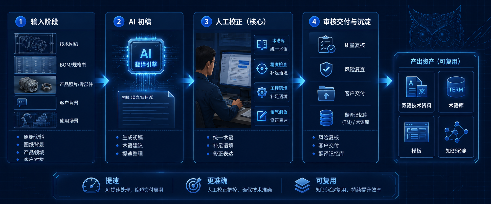

在制造业的日常跨国沟通中，机器翻译（Machine Translation）和 AI 技术的普及极大地提升了文件处理的速度。然而，将包含工艺参数、BOM 表、公差要求或质量检测标准的技术资料直接丢进翻译软件，然后原封不动地发给客户，往往是灾难的开始。
机翻和 AI 翻译可以大幅提升效率，但技术资料翻译绝不能完全依赖机器直接输出。真正可用的做法，是 AI 先生成初稿，再由懂制造业、懂产品、懂客户沟通的人进行术语校正、语境修正、风险筛查和最终确认。
1. 为什么技术资料翻译不是普通翻译？
技术资料的翻译并不是单纯的语言转换，而是信息的准确传递与工程共识的建立。
海外客户阅读技术文档（Technical Documents）的目的不是为了欣赏优美的语言，而是为了判断你的工厂是否专业、工艺是否可靠、是否具备按图纸交付的能力。在制造业中，很多术语背后对应的不仅是词汇，更是具体的材料、尺寸、结构、工艺标准和责任边界。
一旦翻错，问题绝不仅限于“表达不够地道”。一个微小的术语偏差，可能导致工程师对材料性能的误判，进而引发报价错误、打样失败、甚至长期的商业纠纷与索赔风险。
2. 只靠机翻会出现哪些典型问题？
完全依赖机器翻译的技术资料，通常在实际工程沟通中会暴露出以下致命弱点：
- 术语不一致：同一个零件、同一道工序或设备，在规格书的前后被翻译成了不同的英文单词。这会让客户误以为在描述两个不同的部件，造成极大的困惑。
- 字面正确但工程语境错误：语法通顺，单词也查得到，但完全不符合该行业的默认表达习惯。比如把某种特定的表面处理工艺直接按字面直译，导致国外工程师完全不知道你在说什么。
- 忽略上下文逻辑关联：机器很难自动打通图纸、BOM 表、规格书之间的逻辑关联。当文档中出现代词或缩写时，脱离了工程上下文的机翻经常会指代错误。
- 放大商务与法律风险：机翻往往无法识别技术条款中的“模糊地带”。例如把需要双方协商的公差或免责声明翻译得过于绝对，无形中替工厂承担了不该承担的风险。
- 客户理解成本增加：看似英文全翻译出来了，但句式冗长、逻辑生硬，客户读起来甚至比看图纸还费劲，最终削弱了对供应商专业度的信任。
3. 哪些内容最不能直接机器翻译后就发给客户？
并非所有的翻译都需要极高的人工介入，但在制造企业的对外沟通中，以下几类核心文档如果直接依赖机器输出，风险极高：
- 产品规格书 (Product Specifications)：包含核心参数、性能指标，是客户验收的直接依据。
- 图纸说明 (Drawing Notes)：图纸角落的备注往往包含极度精简的加工要求和公差说明，机翻极易误解。
- 模具/工装说明：涉及复杂的机械结构和内部空间逻辑，直译经常导致动作关系表达反向。
- 工艺流程说明 (Process Flow Charts)：描述了产品如何从原材料变成成品的逻辑链条，术语专业性要求极强。
- 报价条款里的技术备注：不仅是技术说明，更是商务契约，错翻会导致价格核算前提失效。
- PPAP / 检测报告 / 质量文件：这些是建立品质信任的基石，不专业的翻译会让数据显得毫无公信力。
- 官网产品介绍页：代表了企业的全球数字门面，机翻痕迹过重会直接打消高质量买家的询盘意愿。
4. AI 在技术翻译中真正适合做什么？
我们并不是要否定 AI 的价值，而是要给 AI 找对位置。在技术翻译中，AI 是一个极其优秀的“底座支撑”工具。它最适合承担以下工作：
- 快速生成初稿：在几秒钟内将数万字的中文文档转化为英文初稿，建立基础的骨架。
- 统一基础格式：协助处理排版复杂的表格文档，将中英文对齐。
- 提炼长文档重点：帮助业务员在翻译前快速总结一份厚重的外语规格书的核心要求。
- 辅助构建术语表 (Glossary)：从大量历史文档中自动提取高频词汇，协助建立企业专属的中英翻译对照表。
通过把这些重复、耗时的“体力活”交给 AI，业务员和工程师就能省下大量时间，集中精力去做最关键的逻辑校核。
5. 正确的人机协作翻译流程是什么？
要彻底解决技术翻译的痛点，制造团队需要建立一套标准化的“人机协作”工作流。下面这张流程图展示了更适合制造业团队的技术翻译协作方式：不是把翻译工作完全丢给机器，而是让 AI 负责提速，让人工负责关键判断。

- 输入阶段：不仅给 AI 提供原文，还要喂给它图纸背景、产品所属的细分领域、客户群体以及使用的具体场景。提示词越精准，初稿质量越高。
- 初稿阶段：由 AI 生成第一版翻译，并对不确定的专有名词提供标注或备选建议。
- 人工校正阶段（核心）：由懂业务或懂工程的人介入。统一核心术语，补足被机器遗漏的工程语境，修正生硬的表达，使其符合海外工程师的阅读习惯。
- 审核交付与沉淀阶段：核查责任边界与商务风险。发送给客户后，将修改确认好的优质翻译和专业词汇沉淀到企业的“翻译记忆库 (Translation Memory)”中，作为下次 AI 生成的语料资产。
6. 真正的竞争力不是“翻得快”，而是“翻得准、讲得清、能复用”
引入 AI 之后，我们如何衡量技术翻译的价值？我们可以通过下表的对比，清晰地看到两种模式的本质区别。
| 对比项 | 纯机器直接翻译 | AI 初稿 + 业务/工程人工审校 |
|---|---|---|
| 处理速度 | 极快（秒级） | 较快（机器提速，人工把关） |
| 术语一致性 | 差，容易出现前后翻译不统一的情况 | 高，通过人工校对与术语库干预保持统一 |
| 工程准确性 | 不稳定，容易误解缩写和加工要求 | 100% 确认，符合真实的图纸与工艺逻辑 |
| 商务风险控制 | 风险极高，责任边界模糊 | 风险可控，人工排雷商务条款 |
| 客户理解体验 | 生硬难懂，沟通往返成本高 | 自然专业，建立起可靠的工程信任感 |
| 数字资产沉淀 | 无，每次都是从零开始 | 强，逐步积累企业专属的翻译语料和术语库 |
对制造企业而言，把资料翻译好，带来的直接价值是降低跨语种沟通的试错成本，减少因误解导致的反复确认甚至加工报废。更长远来看，这能逐步建立起企业自己的术语库和知识库，把一次性的“翻译任务”转化为长期可复用的“数字资产”。
7. 结论
技术资料的翻译永远不能只靠机翻。在 B2B 制造业复杂的业务链条中，AI 应当被定位为强大的“效率放大器”，而不是最终结果的“责任承担者”。
真正成熟的制造外贸与工程团队，应该学会用 AI 去压缩那些低价值的重复劳动时间，然后把省下来的精力投入到用专业经验进行关键校核上。最终的目标绝不仅仅是为了“省下几分钟的翻译时间”，而是要在全球化的市场中，建立起一套稳定、可信、且可持续积累的企业对外沟通系统。